[Window] Apacheをインストール方法、サービスに登録する方法。
こんにちは。明月です。
ウェブサーバということで代表的なミドルウェアは「apache」と「IIS」があります。
「IIS」の場合はWindowサーバの専用のウェブサーバです。IISで使えるプログラム言語は「ASP」と「ASP.net」があります。追加モジュールをインストールすると「PHP」や「java」も出来ないことではないですが、普通で使わないです。
「apache」の場合はWindowサーバやLinuxサーバで別にOSの関係なくて運用できるウェブサーバです。「apache」の場合はアプリサーバではないので「apache」ままでは静的ウェブページと「perl」、「python」だけを使えますが、「tomcat」や「php」を拡張すると「java」や「php」まで使えます。
link - https://www.apache.org
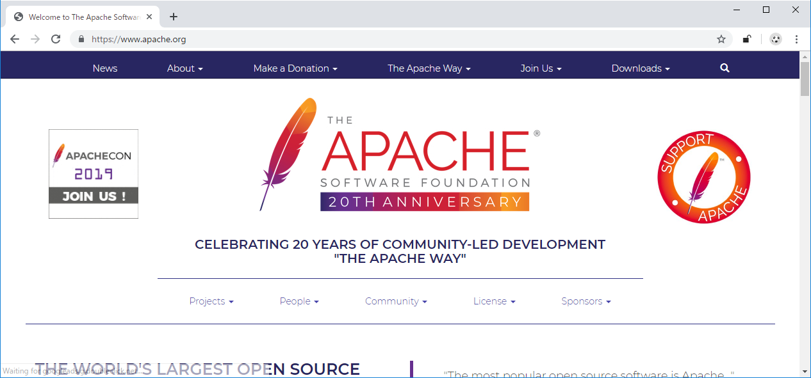
実は上の公式ホームページでは「apache」サーバをダウンロードができません。いや、正確にいうとコンパイル前のソースがあるのでダウンロードしてもコンパイルをしなければならないです。
その手続きが簡単ではないですね。
それでコンパイルされたファイルをダウンロードしなければならないですが、それは別のアドレスで提供しています。
link - https://www.apachelounge.com/download/
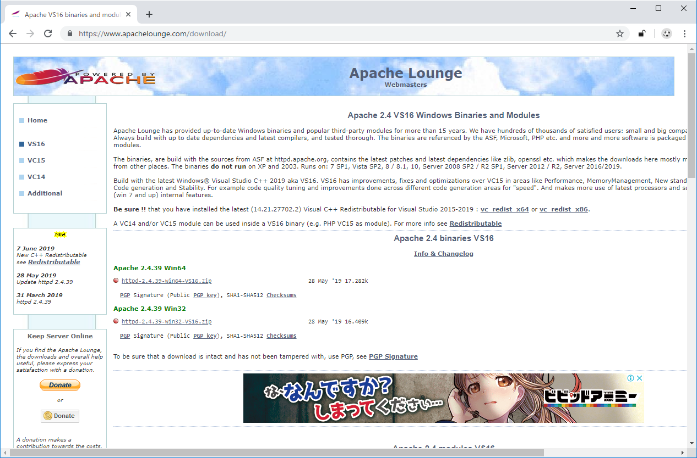
この間まではバージョン2.2も提供しましたが、もう、提供しないらしいですね。それなら「2.4」バージョンをダウンロードしましょう。
ダウンロードして適当なところで解凍しましょう。
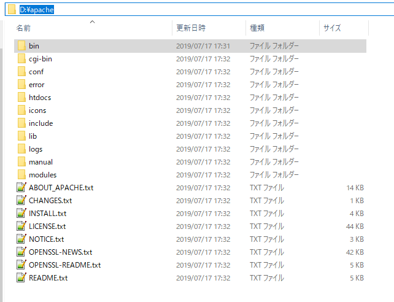
そして「conf」フォルダの中で「httpd.conf」ファイルがありますが、メモ帳で開きます。
その中で「server root」を変更しなければならないです。
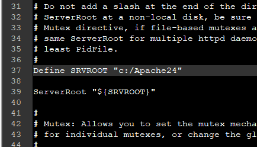
上の37行目で「ServerRoot」が「C:\Apache24」で設定されていますね。
私の場合はDドライブでインストールしましたので、「D:\Apache」で設定しました。
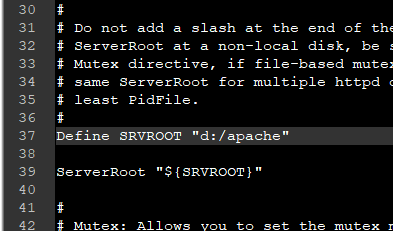
2.2バージョンでは置換子がなかったので修正する項目が多かったが、2.4バージョンは置換子(Define)があるのでそこだけ修正すれば良いですね。
コンソールに当該なディレクトリに移動して「bin」フォルダの「httpd」を実行しましょう。
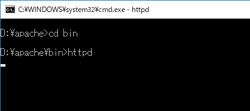
後、ブラウザに「localhost」を打って接続しましょう。
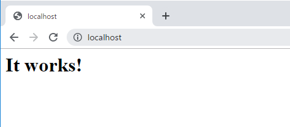
「It's work」という文言が出ればきちんとインストールがされていることです。
これから「apache」を「Window service」に同録しましょう。
「apache」をサービスに同録する方法では「httpd」のコマンドで「-k」オプションを与えると登録できます。
httpd -k install -n "サービスの名"
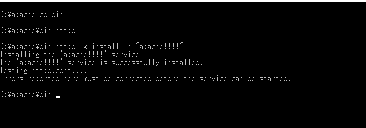
※もし登録中で上のメッセージではなく、エラーが発生する場合は管理者モードですると出来ます。
これからサービス設定に行きます。コマンド名は「service.msc」です。

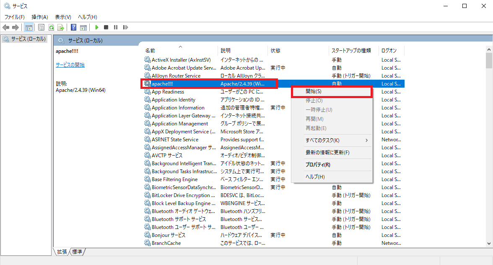
「apache」を起動しましょう。
また、ブラウザで「localhost」を打って接続しましょう。
「It's work」が出れば、ちゃんと同録して起動されますね。
これからは「Window service」から「apache」サービスを解除しましょう。
httpd -k uninstall -n "サービス名"
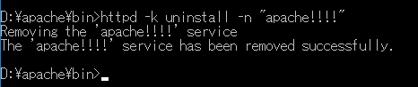
逆に「install」のオプションを「uninstall」に変わるとよいです。参考に「uninstall」だってサービス名を入力しなければ、エラーになります。
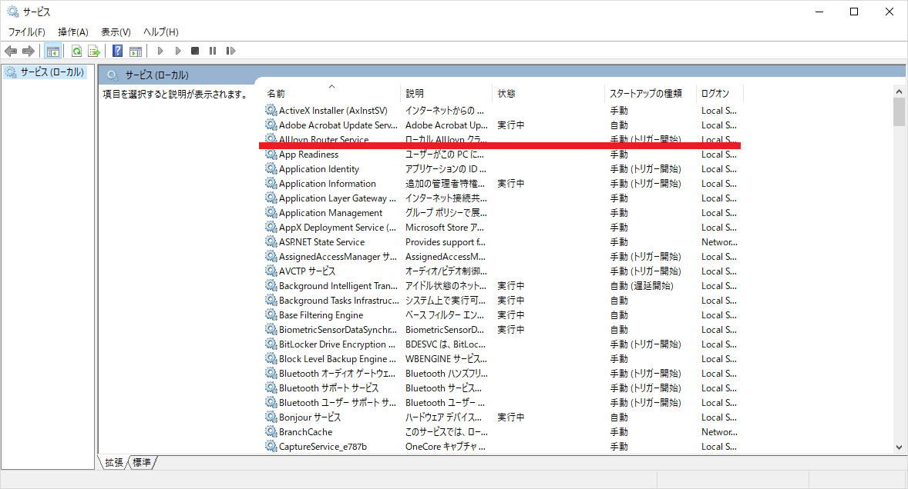
※もしサービスで無くならなく、そのままあればサービス停止してサービスウィンドウを閉じて再起動するとなくなります。
- [Window] WindowでFTPサーバを構築する方法2020/03/19 03:27:22
- [Window] Apacheをインストール方法、サービスに登録する方法。2019/10/18 07:36:51
- [Window] WindowでExplorerのContext menuを修正する方法。2019/07/01 01:42:41
- [Python] 07. globalとnonlocal2020/06/03 20:34:49
- [Python] 06. 関数(function) - インライン関数、callbak、ラムダ(lambda)そしてクロージャ2020/06/02 20:51:22
- [Python] 05. コンプリヘンション(Comprehension)を使用する方法2020/06/01 19:38:58
- [Python] 04. 制御文(if, while, for, break, continue)とインデント2020/05/29 21:09:08
- [Python] 03. Pythonでリスト(list)とタプル(tuple)、そしてディクショナリ(dictionary)、セット(set)2020/05/27 18:49:08
- [Python] 02. データタイプ、変数宣言そしてコメントする方法2020/05/26 18:16:52
- [Python] 01. Python3をインストールする方法(Anacondaインストール)2020/05/25 19:02:44
- [Java] HttpConnectionを利用してウェブページを取得する方法2020/05/20 23:53:24
- [Java] Jsoupを利用してXMLファイル(HTML)を扱う方法2020/05/19 19:32:21
- [C#] 非同期ソケット通信(IOCP)-APMパターン2020/05/18 18:45:37
- [C#] 非同期ソケット通信(IOCP)-EAPパターン2020/05/15 19:31:02
- [C#] ソケット(Socket)通信をする方法2020/05/13 17:37:13
- [C#] NPOIを利用してExcelを読み込んで出力する方法2020/05/08 10:43:52
- [C#] NPOIライブラリを利用してエクセルファイルを生成する方法2020/05/07 01:49:01
- [C#] Geckoライブラリを利用してウェブスクレイピングする方法2020/05/05 00:52:26